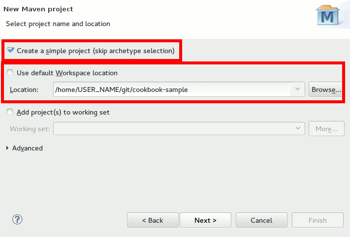
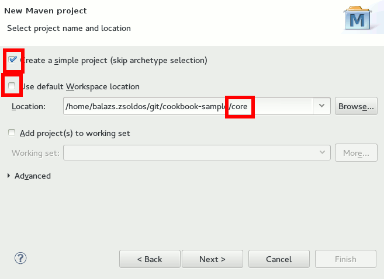

Creating the project frame
Scope
In this chapter, we will create a dummy project that contains nothing else, but a parent project, a sample
component and a test for that component.
Step 1: Checking out the Cookbook Sample from Github
The sample application that will be developed during the chapters of this CookBook is available in a Github repository. Each chapter of the book is a branch
in that repository. For this chapter, we need the first branch, which is basically an empty folder. Later, it will
be possible to jump between chapters, just by switching between branches.
Start Eclipse.
Check out the sample repository
from the https://github.com/everit-org/cookbook-sample.git Git repository.
Step 2: Creating the parent project
Start Eclipse
Open the Java EE perspective (Window -> Open Perspective -> Other..., select Java EE from the
list)
On the left side, you will see the Project Explorer. Right click and select New -> Project...
Select "Maven Project" from the list

Click Next. On the next screen
Select "Create a simple project"
Uncheck "Use default Workspace location" checkbox
Select the folder where the Git repository was checked out to
In the next window, define the following values (you must open the Advanced menu to be able to
specify everything):
Click on the Finish button
The project appears in the "Project Explorer", however, it is displayed in red. The reason is that
it cannot find the parent project. To solve the problem, you have to add the following snippet to the pom.xml
file below the "packaging" block:
<repositories>
<repository>
<id>everit.public</id>
<url>http://repository.everit.biz/nexus/content/groups/public</url>
</repository>
</repositories>
In case you have a good internet connection, the project should not be red anymore.
We would like to skip the parent and tests projects from the deployment and the site generation. To
do that, add the following lines to the pom.xml:
<properties>
<maven.site.skip>true</maven.site.skip>
<maven.site.deploy.skip>true</maven.site.deploy.skip>
<maven.deploy.skip>true</maven.deploy.skip>
</properties>
Delete the src directory, as we do not need it in the parent project.
Add a file named ".gitignore" next to the pom.xml. Although we work with Eclipse, we would not like
to commit any IDE related file accidentally. The content of the .gitignore file should be:
Step 3: Creating the core project
The core project contains the business logic and the definition of the persistent schema it uses directly. The
created parent project makes it possible to compile the sub-modules together. However, we do not want the project to
inherit any settings from its parent, therefore, we will define the org.everit:oss project as the parent of the core
project.
In the project explorer, click on the org.everit.cookbook.parent project with the right mouse button
and select New -> Other...
Select the "Maven Project" item from the list in the new window and click "Next".
On the next page
Select the "Create a simple project" checkbox
Uncheck the "Use default Workspace location" checkbox
Append "/core" to the parent project folder in the location input box
On the next page define the following values:
Open the pom.xml file of the parent project again and add the following lines:
<modules>
<module>core</module>
</modules>
We have just defined that when we compile the parent project, the core should be compiled as well.
Create the .gitignore file in the
core project
Delete the src/test/java and serc/test/resources folders from the core project (in the Project
Explorer view as it will change the project build properties as well) as tests will be in a separate module.
Open the pom.xml file of the core project and insert the following snippet after the version line:
<packaging>bundle</packaging>
<build>
<plugins>
<plugin>
<groupId>org.apache.felix</groupId>
<artifactId>maven-bundle-plugin</artifactId>
<version>2.4.0</version>
<extensions>true</extensions>
<configuration>
<instructions>
<Bundle-SymbolicName>${project.artifactId}</Bundle-SymbolicName>
<Import-Package>
*
</Import-Package>
<Export-Package>${project.artifactId}</Export-Package>
</instructions>
</configuration>
</plugin>
</plugins>
</build>
Add the Declarative Services and Metatype
codegenerator configuration fragment to the pom.xml of the core project.
Due to the reason that Maven settings have been changed, the project has got errors. To solve them,
press the right mouse button on the project in the Project Explorer and select "Maven -> Update Project...".
In the new window, select the Ok button.
Step 3: Create the API in the core project
We will implement a simple User management component that handles users with two pieces of information: name
and a birth date. At this point, our database will be a simple Map in the memory.
Create the User DTO class:
Create a class named User in the src/main/java source directory of the core project.
Create three properties in the class: long
userId, String name, Date birthDate.
In the end, the source of the class should look like this:
package org.everit.cookbook.core;
import java.util.Date;
public class User {
private long userId;
private String name;
private Date birthDate;
public Date getBirthDate() {
return birthDate;
}
public String getName() {
return name;
}
public long getUserId() {
return userId;
}
public void setBirthDate(final Date birthDate) {
this.birthDate = birthDate;
}
public void setName(final String name) {
this.name = name;
}
public void setUserId(final long userId) {
this.userId = userId;
}
}
Create a new interface in the core project called "org.everit.cookbook.core.UserService".
Add the following functions to the interface:
In the end, the source of the interface should look like this:
Step 4: Creating the test module
The test module will contain the tests of the